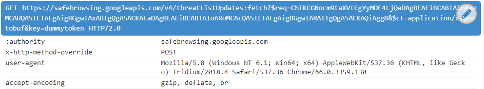

Iridium Browser
Iridium is a privacy-based fork of Google Chrome. From their website: "All modifications enhance the privacy of the user and make sure that the latest and best secure technologies are used. Automatic transmission of partial queries, keywords and metrics to central services is prevented and only occurs with the approval of the user." Unlike other browsers of its kind, this one is fully featured (has all the addons that are available for Chrome), and so is recommended for everyday usage.
Spyware Level: Low
After following the mitigation guide, this software is Not Spyware.
The only unsolicited request is for the Google SafeBrowsing feature, and can be easily turned off from the Preferences menu. Additionally, privacy enhancements unrelated to Google are added, such as blocking third party cookies by default, and deleting local storage on close. Full list of the differences between Chrome and Iridium can be found here[1]. However, this list is not accurate and each claim it makes should be verified by the user.
Phoning Home
Iridium browser will make these requests to Google to update a blocklist of websites for its SafeBrowsing feature:

Iridium browser will also download this blocklist from a mirror maintained by the developers. Since the web browser is
always "phoning home" to either google or the developers servers, this is a form of spyware that can be used to monitor
usage of the program, as well as collection of the User-Agent's of the program's users. (See the HTTP article)
This request is made 5 minutes after the program is started, and then updated every 30 minutes.
Inaccurate Privacy Claims
The Iridium developers make the claim that as one of the privacy enhancements of Iridium, it uses the Google SafeBrowsing spyware feature, but with their own mirror of Google's database, meaning that you can
use the feature without constantly phoning home to google, but instead phoning home to the developers, which, while still being a form of spyware, is an increase in privacy
for the user[1]. At least it would be if this section was actually true. You can see that from the "Phoning Home" section of this article, this claim is simply
not true, which is very bad because it undermines the credibility of the other privacy claims that Iridium makes.
According to another writer, in his tests the browser would only connect to iridiumbrowser.de. So it is possible that this privacy claim is true for some versions of Iridium,
and false for other versions of Iridium. The version of Iridium that phones home to Google is Version 2018.4 for 64-bit Windows, tested on Windows 7, if you want to see this
for yourself.
Not only is this privacy claim inaccurate, but a pull request[2] has been open on the developers GitHub for OVER A YEAR with no response from the development team.
It's pretty disappointing to see such a privacy concerned front to this project, but then a negligent attitude with long-standing privacy issues once you pull back the curtain
and look a little deeper at the claims this browser makes.
Sources
1.
Differences between Iridium and Chromium
[web.archive.org]
[archive.is]
[via.hypothes.is]
2.
Still access to google safebrowsing servers
[web.archive.org]
[archive.is]
This article was last edited on 5/16/2018
This article was created on 5/5/2018
If you want to edit this article, or contribute your own article(s), visit us at the git repo on Codeberg. All contributions must be licensed under the CC0 license to be accepted.

Back to catalog